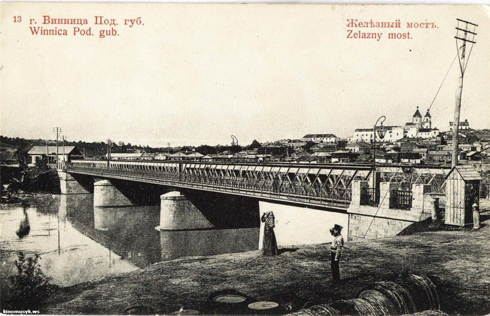

Історія
З чого все почалося?

Вінниця — місто на західно-центральній частини України, на берегах Південного Бугу, адміністративний центр Вінницької області, Вінницького району та Вінницької міської громади, значний історичний осередок східного Поділля, центр Вінницької агломерації.
На думку Нікандра Молчановського, поява перших постійних осад-колоній у Вінниці, Брацлаві та Сокільці припадає на кінець ХІІІ — початок XIV століть, що принаймні у Вінниці підтверджується археологічними знахідками. З цією концепцією погоджується історик Валентин Отамановський.
Легендарний міст
